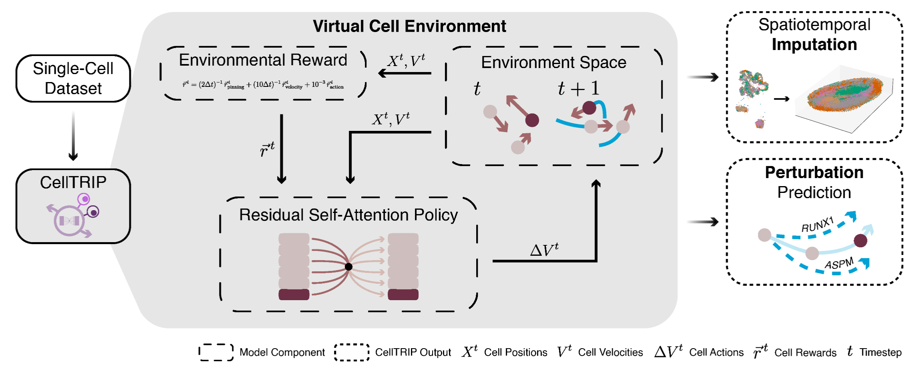
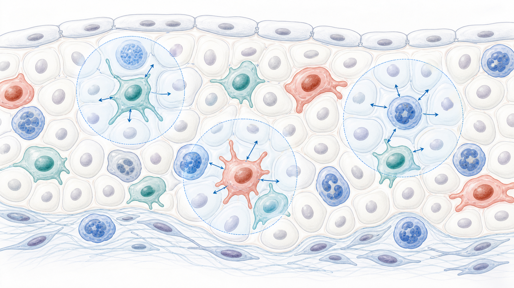
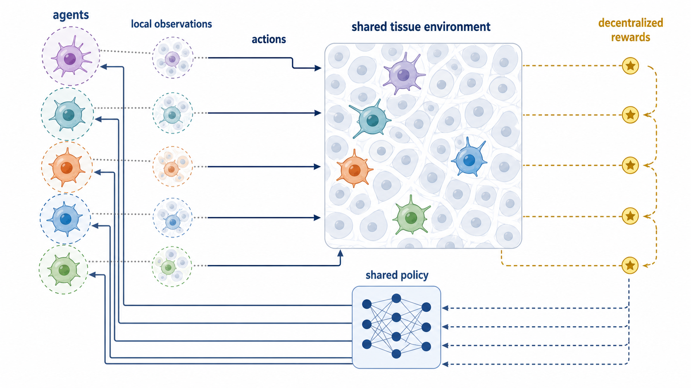
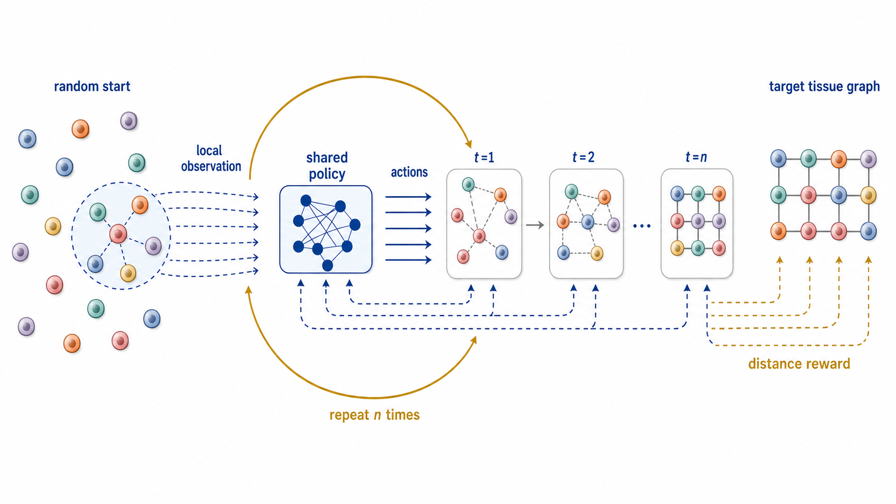
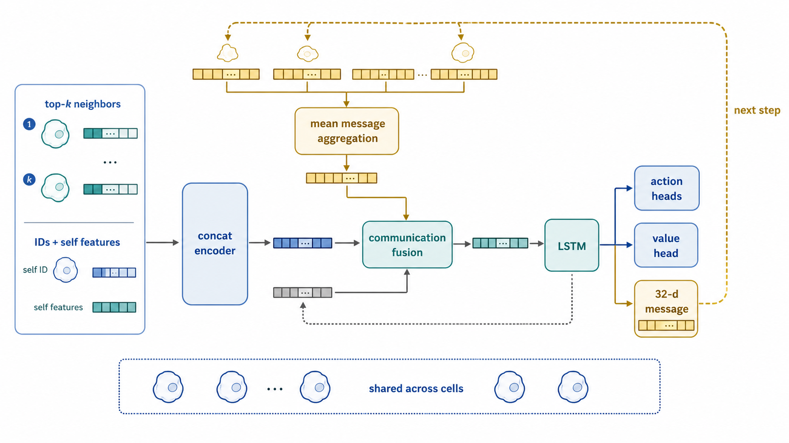
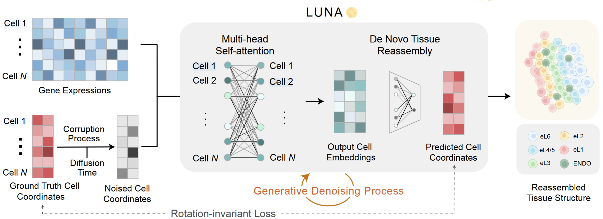
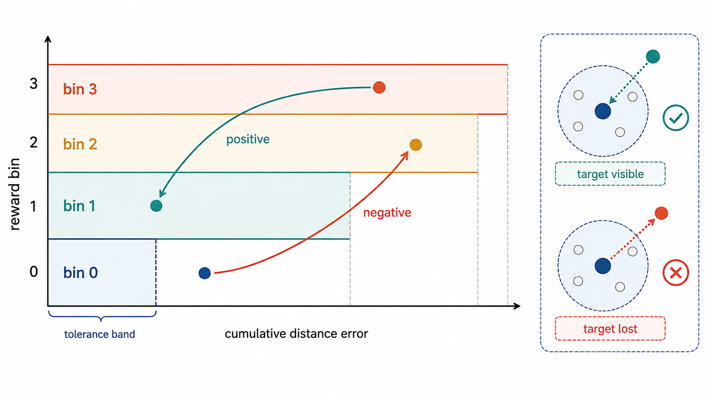
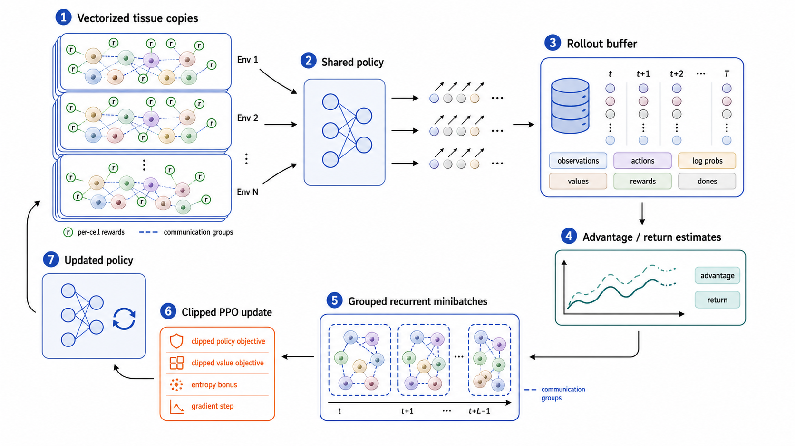

Cells are Agents: Multi-Agent RL for Spatial Multicellular Dynamics
Darius Schaub ·
Why Tissue-Level Models?
- Long-term goal: simulate the body at useful levels of coarseness.
- Tissue organization is central to disease initiation, progression, and treatment response.
- Single-cell foundation models miss spatial cell-cell interactions.

Multi-Agent Reinforcement Learning

- Many agents act simultaneously in a shared environment.
- Execution is decentralized: each cell receives local observations and its own reward.
- Training learns shared policy parameters that maximize expected return.
Objective
\( \theta^\star = \arg\max_\theta \; \mathbb{E}_{\pi_\theta}\left[\sum_{t=0}^{T}\gamma^t \sum_{i=1}^{N} r_i^t \right] \)
Learn one policy that produces local actions from local observations while optimizing the decentralized rewards collected by all agents.
Tissue Reassembly Task

- Input: target coordinates define a top-\(k\) neighbor graph.
- Agents begin from non-target initial coordinates.
- Objective: recover the original spatial organization of the tissue.
Model Architecture

- Config uses a concat encoder: neighbor features, ID features, and self features are flattened into one MLP.
- Cell communication: each cell emits a 32-d message and receives the mean transformed neighbor message.
- The fused representation enters a 256-unit LSTM, followed by action, value, and next-message heads.
Related Work: CellTrip
Related Work: LUNA

Observation Space
Neighbors
Radius top-\(k\), \(k=8\), padded if fewer cells are visible.
Per slot
\(\Delta x,\Delta y\), neighbor heading, neighbor speed, mutual-observation bit, neighbor ID.
Self
Self ID, perceived-neighbor ratio, heading, speed, previous-step position delta.
Encoding
The configured model flattens all fields into one concat encoder.
Action Space
Action layout
MultiDiscrete([9, 6])
Heading
9 relative turns \(-20^\circ, -15^\circ, \ldots, +20^\circ\)
Speed
Five speed deltas plus stop \(\Delta v \in \{-2, -1, 0, +1, +2\}\)
Communication
Messages enabled; receiver actions disabled.
comm_select_action = false
Reward Signal

Reward
\(r_i^t = 0.6\,\Delta M_i^t + 0.4\,\Delta B_i^t\)
Visibility
\(\Delta M_i^t\) rewards target neighbors entering the local top-\(k\) view and penalizes disappearance.
Distance
\(\Delta B_i^t = B_i^{t-1} - B_i^t\): lower distance-error bin is positive.
Bins
Bin 0 is a tolerance band; later bins have width \(1.5 \cdot v_{max}\).
PPO Training

Collect
PufferLib first steps many vectorized tissue copies and stores trajectories for all cells.
Estimate
Per-agent rewards are converted into return and advantage estimates against the value baseline.
Objective
\(J = J_{\mathrm{clip}} - c_{v} L_{v} + c_{h} H(\pi_\theta)\)
Shift
Actions with positive advantage become more likely; negative-advantage actions become less likely, with clipping limiting each shift.
Update
Sample recurrent minibatches, keep communication groups intact, and take clipped gradient steps.
Vector Communication
Synthetic Experiment
- Target: reconstruct square grid patterns from random coordinates.
- Initial setup: \(8 \times 8\) baseline with coordinate-based identity features.
- Stress tests: altered starts and larger agent counts without changing the task definition.
Training signal
Agents learn local movements that reduce top-\(k\) target-distance error, not a global image loss.
Synthetic Rollouts: 8 x 8
Synthetic Rollouts: Scaling
Real Data: First Small Case
- Dataset slice: one quarter of a kidney glomerulus.
- Current scale: 20 cells total.
- Purpose: test whether the same local objective transfers beyond synthetic grids.
Media status: the requested best-performing real-data rollout is not present in the current slide folder. Add it under `videos/real/` and this slide can be wired to the file directly.
Outlook
- Discuss methodological overlap and benchmarks with the CellTrip first author.
- Replace coordinate identity with cell type-based encoding and local reward design.
- Run extensive sweeps over reward weights, communication, aggregation, and PPO settings.
- Move from reconstruction toy tasks toward disease-relevant tissue dynamics.